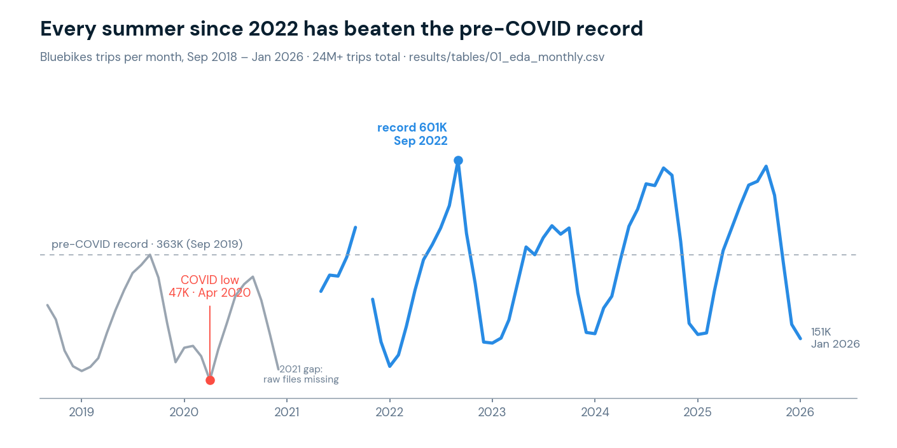
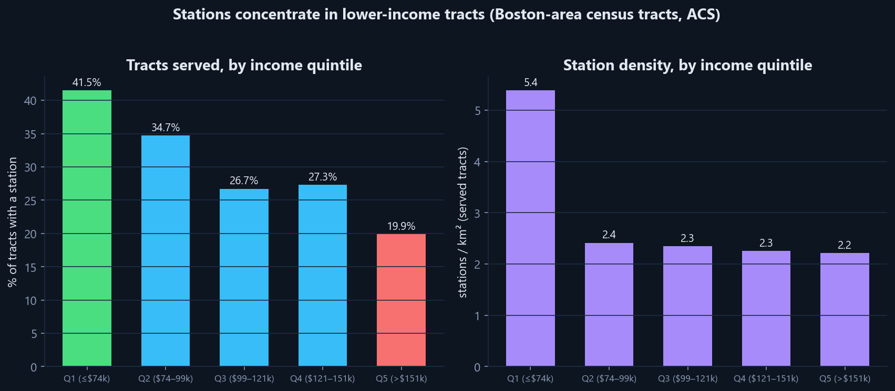
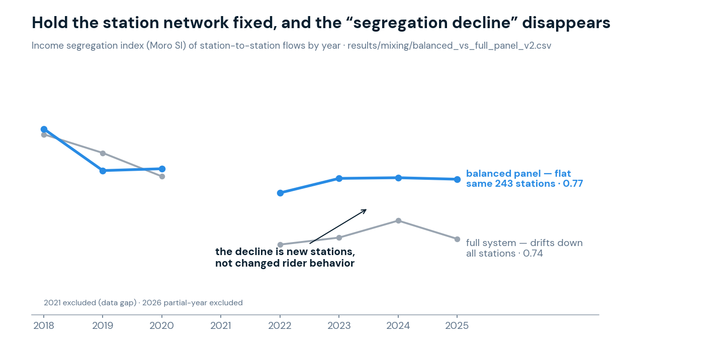
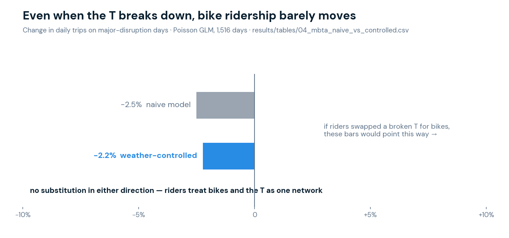

City of Boston · Transportation & Equity
Who bikeshare serves, who it connects,
and where the next docks should go
Krishna Singh · Northeastern University
24M+ trips 2018 – Jun 2026 · ACS census · NOAA weather · MBTA

24M+ Bluebikes trips (Sep 2018 – Jun 2026) joined to census tracts, weather, and MBTA service data. Through COVID and back: peak month 601K trips (Sep 2022), with 2024–25 summers close behind.

Quintile view of the same pattern: 41.5% of Q1 tracts served vs 19.9% of Q5, and 5.4 vs 2.2 stations/km². Stations concentrate in lower-income, more diverse tracts.

Hold the station network fixed (243-station balanced panel) and income SI stays flat ≈ 0.78 while the full system drifts down to ≈ 0.74 — new stations, not changed behavior, drive the decline. Same pattern for race.

Greedy MCLP over census block groups, verified July 2026 (12_new_station_mclp.csv). Pairs directly with the 49.3% / 23.2% access-equity gap: coverage growth can be pointed at underserved tracts.
Every trip is a vote for a corridor (11_lane_gap_corridors.csv). Ready-made prioritization input for BTD's protected-lane program.
13_movable_stations.csv. Complements the 25-site MCLP: one asks "where next?", this asks "what is the theoretical ceiling?"
krishna-coder6111.github.io/blueroute/atlas/
Krishna Singh · Northeastern University · singh.krish@northeastern.edu